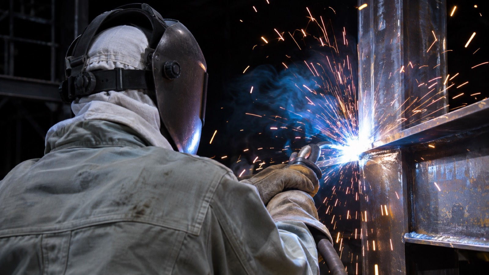
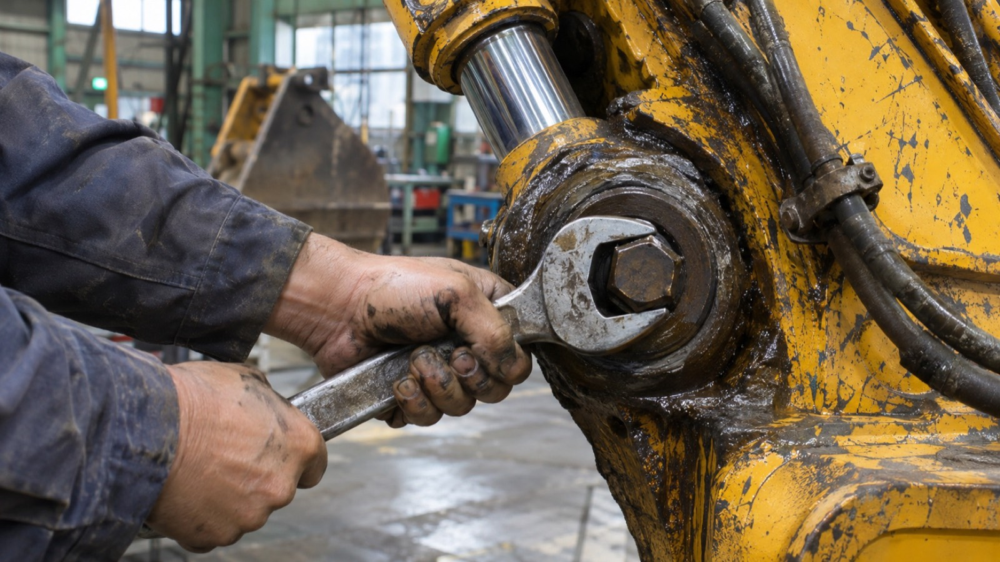

Build the Foundation, Build Your Future
地図に残る仕事を、
自分の手で。
advantage強み
未経験から、
一人前の職人へ。
5つの工種がある会社だから、自分に合う仕事を現場で見つけられます。資格の費用はすべて会社が負担します。

- POINT 01
資格取得の費用は全額会社負担
車両系建設機械・玉掛け・溶接・足場の特別教育など。取得すれば資格手当がつきます。
- POINT 02
先輩とペアで現場に出る
入社から半年は、同じ先輩と同じ現場へ。道具の名前から一つずつ覚えられます。
- POINT 03
5工種から自分の道を選べる
重機が好きなら整備や土工へ、ものづくりが好きなら鉄筋や溶接へ。途中で変えることもできます。
YOUR FUTURE
5年後、あの建物を
指さして言える。
「あれ、俺がつくったんだ」と。
TRADE CHECK
あなたに向いている工種は？
3つの質問で、5つの工種から近いものを出します（30秒）
voices社員の声
鉄筋工事／入社3年目
自分が組んだ鉄筋の上に、
橋が立っている。
KAITO.S
前職／飲食店スタッフ
最初は結束線の扱いすらできませんでした。先輩に毎日教わって、2年目で職長の補佐に。家族と車で通る橋の下に、自分の仕事があるのが自慢です。

機械整備／入社6年目
止まった重機を、
その日のうちに動かす。
RYOTA.M
前職／自動車整備士
車の整備から転職しました。重機は部品も油圧も桁違いですが、自社の現場で使う機械なので、直したあと動く姿をすぐ見られます。「助かった」と言われるのがいちばんうれしい。
足場・とび／入社1年目
高いところの景色は、
ここで働く人だけのもの。
YUNA.K
前職／事務職
体力に自信はありませんでしたが、安全の決まりを一つずつ守れば大丈夫だと教わりました。女性用の更衣室もあり、現場の人もみんな気にかけてくれます。
※社員の声はサンプルです。写真はAIで作成したイメージで、実在の社員ではありません
one day現場の1日
本社に集合
その日の現場と段取りを確認。社用車で現場へ。
朝礼・KY活動
危ない所をみんなで洗い出してから作業に入る。
小休憩
午前と午後に1回ずつ、15分の休憩。
昼休み
60分。夏場は日陰と冷房の休憩所あり。
片付け
道具と現場を片付け、翌日の段取りを確認。
帰社・解散
残業は月平均10時間。
※サンプルです
recruit採用情報
礎匠はこれからも
まちの土台をつくり続けます。
その現場に立つ仲間を、待っています。
手に職をつけたい
資格と技術は、
一生使える自分の財産になる体を動かして働きたい
デスクより現場。
一日の成果が目に見える稼げる力をつけたい
腕と資格の分だけ、
給料が上がっていく
現場職人土工・鉄筋・足場・溶接／正社員・未経験歓迎
- 仕事内容
- 広島県内の土木・建築現場での施工。配属は希望と適性で決めます
- 勤務時間
- 8:00〜17:00（休憩90分）／残業は月平均10時間
- 休日
- 日曜・祝日・第2第4土曜／年間休日105日
- 給与
- 日給11,000円〜18,000円＋資格手当
- 応募資格
- 普通自動車免許（AT限定可）
- 勤務地
- 広島県内の各現場（本社に集合して車で移動）
建設機械整備士正社員・経験者優遇
- 仕事内容
- 自社保有の重機の点検・修理・定期整備。現場での出張修理もあり
- 勤務時間
- 8:00〜17:00（休憩90分）
- 休日
- 土曜・日曜・祝日／年間休日115日
- 給与
- 月給250,000円〜380,000円
- 応募資格
- 自動車整備士・建設機械整備技能士のいずれか（取得予定も可）
- 勤務地
- 東広島整備工場
※募集要項はサンプルです